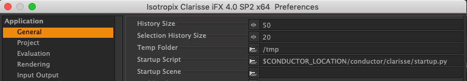
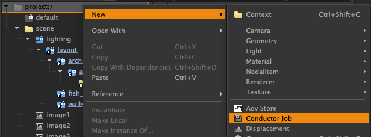
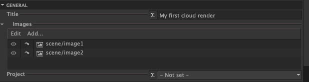
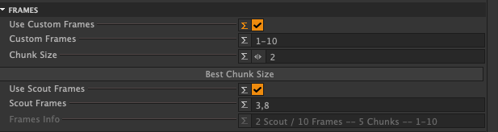
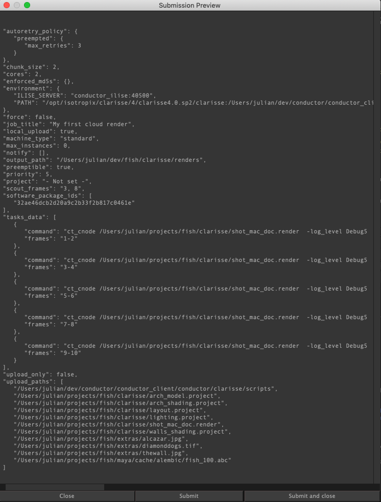

Clarisse submitter.¶
Introduction¶
The Conductor submitter for Clarisse allows you to ship renders to Conductor's cloud from a familiar interface within Clarisse. It's implemented as a custom class that lives inside the project. The class name is ConductorJob.
You may configure many ConductorJobs in a single project in order to try out different cloud parameters. A single job may also be set up to render many images, such as multiple VR cameras.
Any properties you set on a ConductorJob will be stored inside the project when you save so you can be confident that subsequent renders of the same scene will behave the same.
Installation¶
If you haven't already done so, install Conductor client tools.
Register the plugin¶
To register the submitter, set the path to the provided script in the Startup Script section of the preferences panel. It will take effect the next time you start Clarisse.
$CONDUCTOR_LOCATION/conductor/clarisse/startup.py

Note
To avoid a restart, enter the following in the script editor:
from conductor.clarisse import startup
Once the plugin is registered, you should see ConductorJob in the Create menu, and in the New menu when you right click over a browser. If not, refer to installation troubleshooting or submit a ticket to Conductor support .
Quick start¶
To create a submission to Conductor:¶
- Open a scene containing one or more images to be rendered.
- Select the project context.
- In the right mouse menu, go to New > ConductorJob.

You'll now see a ConductorJob item in the attribute editor.
Note
You can hover over any attribute name to get a detailed description of its purpose and behavior.
- Set a title for your job. This will show up on the Conductor dashboard.
- Click Add in the Images section to choose some images to be rendered.

If you haven't done so already, turn on Render To Disk for each image and set a filename in the Save As attribute.
You'll notice the project is - not set - and the pulldown menu is empty. This is because the submitter has not yet been in contact with your account at Conductor.
- Press the Refresh button at the top of the attribute editor and if prompted, sign in to Conductor.
- Choose a project from the Project drop-down menu.
- In the Frames section, turn on Use Custom Frames and enter
1-10in the Custom Frames field. - Set Chunk Size to 2.
- Turn on Use Scout Frames and enter
3,8in Scout Frames field.
You'll notice the Frames Info attribute has updated to let you know which frames will be submitted, and how many will be scouted first.

- If you know the machine specification needed for your images, choose it in the Instance Type drop-down menu.
- Check that your version of Clarisse appears in the Packages attribute. If it hasn't been detected, you'll need to open the Choose Packages panel and choose a suitable version.
You are now ready to submit your render using either the Submit or Preview buttons, which you'll find at the top of the attribute editor. You are encouraged to use the Preview button, which will allow you to first check the parameters that will be submitted.

If everything looks good, press the Submit button, and then head over to your Conductor dashboard to check on the job's progress.
Reference¶
In this section you'll find a complete discussion of attributes, variables and other functionality.
Attributes¶
title¶
The title that appears in the Conductor dashboard. You may use Clarisse variables and some Conductor variables in an expression to construct the title. If for example, you want the title to contain the filename, the item name, and the frame range, then enter the following expression.
"$CT_PDIR +" "+ $CT_JOB +" "+ $CT_SEQUENCE
images¶
Images to be rendered. Images must have the Render to Disk attribute set and their Save As field must contain a filename. You may use the eye buttons to disable one or more images.
conductor_project_name¶
The Conductor project. The dropdown menu is populated or updated when the submitter connects to your Conductor account. If the menu contains only the - not set - option, then press the refresh button to connect.
Note
If the list of projects in your account changed since the last time you opened the Clarisse project, you may find it is set incorrectly when it connects.
use_custom_frames¶
Activate a text field to enter a custom frame list. When set, the frame ranges on connected image items will be ignored and the custom frames will be used for all. If you leave use_custom_frames off, then each image may specify it's own range and they may be different from each other. By default, the render command generated for each task renders all images together and calculates the correct frames to render for each image within the chunk.
custom_frames¶
The set of frames to render when use_custom_frames is on. To specify te set of frames enter a comma-separated list of arithmetic progressions. In most cases, this will be s simple range.
1001-1200
However, any set of frames may be specified efficiently in this way.
1,7,10-20,30-60x3,1001
Negative frame numbers are not valid.
chunk_size¶
A chunk is the set of frames handled by one task. If your renders are fairly fast, it may make sense to render may frames per task, because the time it takes to spin up instances and sync can be significant by comparison.
best_chunk_size¶
A convenience function that will try to distribute frames more evenly among chunks. It adjusts chunk_size while keeping the number of chunks unchanged.
A contrived example. You want to render 100 frames and you set the chunk size to 33. This generates 4 chunks of lengths, 33, 33, 33, and 1. If you press best_chunk_size, chunk_size becomes 25. You still have 4 chunks.
use_scout_frames¶
Activates a set of frames to be rendered first. This allows you to check a subsample of frames before committing to the full render.
scout_frames¶
Scout-frames to render. When the submission reaches Conductor, only those tasks containing the specified scout frames are started. Other tasks are set to a holding state.
Note
If chunk_size is greater than one, then you may find extra frames are rendered that were not listed as scout frames. As the smallest unit of execution is a task, there is no way to specify that part of a task should be started and another part held.
preemptible¶
Preemptible instances are less expensive to run than non-preemptible. The drawback is that they may be stopped at any time by the cloud provider. The probability of an instance being preempted rises with the duration of the task. Conductor does not support checkpointing, so if a task is preempted it is started from scratch on another instance. It is possible to change the preemptible setting in the dashboard for your account.
instance_type¶
Specify the hardware configuration used to run your tasks. Higher specification instances are potentially faster and able to handle heavier scenes. You are encouraged to run tests to find the most cost-efficient combination that meets your deadline.
retries¶
Set the number of times to retry a failed task before marking it failed.
dependency_scan_policy¶
Specify how to find files that the project depends on. Your project is likely to contain references to external textures and geometry caches. These files all need to be uploaded. The dependency-scan searches for these files at the time you generate a preview or submit a job. There are 3 options.
-
No Scan. No scan will be performed. This may be useful if the scanning process is slow for your project. You can instead choose to cache the list of dependencies. See manage_extra_uploads. If you choose this method, you should be aware when new textures or other dependencies are added to your project, and add them to the upload list manually.
-
Smart Sequence. When set, an attempt is made to identify for upload, only those files needed by the frames being rendered. Filenames are searched for two patterns that indicate a time-varying component:
####and$4F.- If any number of hashes are found in a filename, then the list of files to upload is calculated based on the frames set in the ConductorJob, and the sequence attributes associated with the filename.
- Likewise, if $F variables are found, the list of files will reflect the frames as specified in the ConductorJob. However, expressions such as
$F * 2are not resolved.
-
Glob. Find all files that exist on disk that could match either of the two time-varying patterns. If for example, your shot is 50 frames, but you have 100 images on disk, then a glob scan will find and uploads all those images even though half of them are not used.
Note
Contexts that reference external Clarisse projects are ignored during the dependency scan. They are localized in the render package and are therefore not required for rendering.
Example
Suppose you have a sequence of 1000 background images on disk. Your shot is 20 frames long and you've set the sequence attributes on the texture map to start 100 frames in. (-100 frame offset). The smart scan option will find frames from 0101 to 0120.
The Glob option finds any files that match a hash pattern. If you have saved all required files in the cached upload list, you can set the policy to No Scan.
local_upload¶
Uploads files from your workstation, as opposed to using an upload daemon.
force_upload¶
Forces files to be uploaded, even if they already exist at Conductor.
upload_only¶
Uploads files but does not start any tasks.
manage_extra_uploads¶
Opens a panel to browse or scan for files to upload. If any files are not found by the dependency scan at submission time, they may be added here.
extra_uploads¶
Files to uploaded in addition to any files found by dependency scanning.
choose_packages¶
Opens the package chooser panel.
packages¶
Packages made available to the remote compute instances.
manage_extra_environment¶
Opens a panel for making modifications to the remote environment.
extra_environment¶
Extra environment encoded as a JSON string.
task_template¶
Specifies a template for the command that will be run on remote instances. See the Conductor documentation site for a detailed discussion.
notify¶
Indicates that notifications will be sent by email on job completion.
email_addresses¶
A comma-delimited list of emails addresses to notify on job completion.
show_tracebacks¶
Show a full stacktrace for software errors in the submitter.
conductor_log_level¶
Set the log level for Conductor's library logging.
Actions¶
Extra uploads window¶
Package chooser¶
Extra environment window¶
Conductor Variables¶
The ConductorJob scripted class is designed to be flexible and powerful. Commands that are executed on Conductor's cloud machines are fully configurable from within the UI. In order to achieve this level of control, a set of variables are available. These are found in Clarisse's Variables panel. In most cases, you don't need them other than to set the job title. If you choose to use them you should understand how they work.
All the Conductor variables are prefixed with CT_ and are created when the ConductorJob is first registered with Clarisse. They are intended for use only in ConductorJob items, and their values are set at the time you create a submission or preview. They cannot be relied upon outside this context, and the value displayed in the Variables panel is only the last value that was set.
Conductor variables that hold paths are formatted to be compatible with Linux render instances. They are enclosed in double quotes, and on Windows, the drive letters are stripped away.
Conductor variables exist at 3 different scopes:¶
- Global. The same value for all job items. Example
CT_TMP_DIR. - Job. A different vaue for each job. Example
CT_SEQUENCE - Task. A different vaue for each generated task. . Example
CT_CHUNKS
Below is the full list of Conductor variables.
| Variable name | Example value | Scope |
|---|---|---|
| CT_SEQLENGTH | 10 | Job |
| CT_SEQUENCE | 1-10 | Job |
| CT_SEQUENCEMIN | 1 | Job |
| CT_SEQUENCEMAX | 10 | Job |
| CT_CORES | 2 | Job |
| CT_FLAVOR | standard | Job |
| CT_INSTANCE | 2 core, 7.50GB Mem | Job |
| CT_PREEMPTIBLE | preemptible | Job |
| CT_RETRIES | 3 | Job |
| CT_JOB | conductor_job_item_name | Job |
| CT_SOURCES | project://scene/image1 project://scene/image2 | Job |
| CT_SCOUT | 3-8x5 | Job |
| CT_CHUNKSIZE | 2 | Job |
| CT_CHUNKCOUNT | 5 | Job |
| CT_SCOUTCOUNT | 2 | Job |
| CT_TIMESTAMP | 2019_05_07_01_12_46 | Job |
| CT_RENDER_PACKAGE | "/path/to/project/shot.render" | Global |
| CT_PROJECT | dpool | Job |
| CT_CHUNKS | 9:10 9:10 | Task |
| CT_CHUNKLENGTH | 2 | Task |
| CT_CHUNKSTART | 9 | Task |
| CT_CHUNKEND | 10 | Task |
| CT_DIRECTORIES | "/path/to/renders/layerA" "/path/to/renders/layerB" | Job |
| CT_PDIR | /path/to/project | Global |
| CT_TEMP_DIR | "/path/to/temp/directory" | Global |